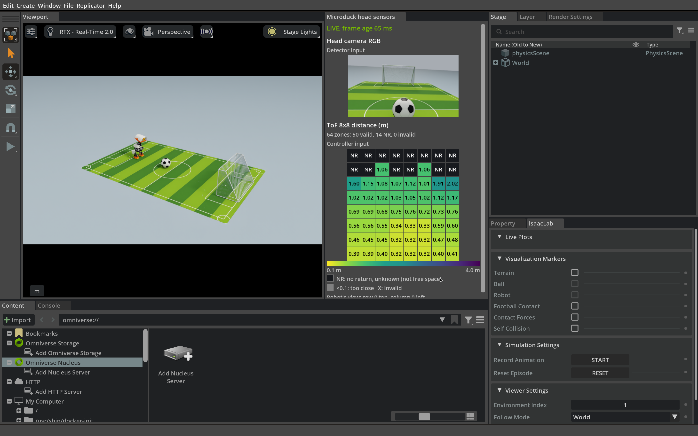

4.2 手工设计的射门阶段#
板载策略把步行射门拆成人设计的阶段，每个阶段满足条件才进入下一步。
射门的六个阶段#
左右滑动查看完整图示
1寻找目标
转头寻找球门和足球，确定自己相对球门的位置。信息过旧或互相矛盾时，停下来重新观察。
2规划接近
由球和球门的位置算出射门方向，在球后方留出一段距离作为站位，用 ROS 2 导航框架 Nav2 规划路径分段接近；途中定期重新确认球门。
3近距细调
离球较近后改为小步移动或原地转向。每走一段就停稳，等身体晃动减小后再看球，因为行走时相机在晃，测得的位置不够准。
4对准出脚位置
检查球是否落在右脚前方、身体是否朝向球门。不满足就回到细调。
5交接给踢球
停止行走，头部回到踢球姿态，并确认身体已经静止、球门信息仍然新鲜，才把控制交给踢球技能。
6踢球与恢复
运行已训练好的踢球与恢复技能，随后回到站立。是否进球由评测程序用仿真真值判断。
阶段之间不是按时间切换，而是看条件：条件不满足，策略就停下、重新观察或退回上一阶段，所以一次射门中细调常会重复好几次。板载策略不直接控制关节：移动请求交给 2.1 节体验过的行走策略，出脚交给踢球技能。
观察自动射门#
先按 1.2 节 准备好课程容器，再回到容器终端；容器已在运行时，可以在宿主机用 docker exec -it microduck-workshop bash 进入。然后运行：
python3 scripts/run.py football --seconds 45 --output outputs/onboard-football
Isaac Sim 窗口打开后，会自动显示头部 RGB 图像和 8×8 ToF 面板。观察机器人怎样走、停、看交替，任务阶段又怎样切换。一次运行不保证进球，结局以终端输出和输出目录里的记录为准。可以随时按 Ctrl+C 停止；重新运行时换一个新的 --output 目录。


左侧观察机器人，右侧对照它此刻看到的图像与距离。NR 表示没有回波，不能据此认为前方没有障碍。
代码关键参数
场景。
lab/onboard_scene.py创建绿色球场；--scene indoor与--style A是run.py football的默认值。行走策略。 仓库的
models/walk.onnx复制为容器内的/workspace/state/student-course/simulation/core/models/reference/velstand.onnx，由--model加载。检测器。
run.py先核对models/scene-detector/deployment.json所列权重的 SHA-256，再写出/workspace/state/scene-detector-deployment.json，经--detector-deployment加载。踢球与恢复。 执行器从固定路径
/workspace/state/student-course/configuration/core/kick_policy/export/deployment.json加载，它绑定由models/kick-teacher.onnx和models/kick-residual.onnx复制的两个网络。
这些阶段从哪里来#
每个阶段和切换条件，都来自我们对射门这个任务的理解：踢球技能需要球在右脚前、身体朝向球门，所以要站位和对准；行走时看不准，所以要走、停、看交替；踢球要从静止站姿开始，所以要单独交接。
这样的流程清楚、容易排查，但只适合这一个任务。换成“把球带到中圈停下”或“走到球旁但不要碰球”，阶段、条件和阈值大多要重新设计。能不能用一句指令说明任务，让模型从示范中学会该做什么？第 5 部分用 GR00T 尝试这条路线，它的示范来自板载策略。
检查理解
想让 Microduck 把球带到中圈停下，现有的板载策略能直接复用吗？
查看解析
感知部分大多可以复用，但站位、阶段顺序、切换条件和交接都是为射门设计的，需要重新设计和调试。为每个新任务手工重写流程，正是第 5 部分转向从示范中学习的原因。